FAQ
Everything the app does from setting up Event Details to reading the Craft Prize drawing. The first half covers regular features in the order you'll actually meet them during a game night; Tips & Tricks near the bottom covers the power-user stuff tucked into Advanced Settings, plus a few shortcuts that aren't obvious from just looking at the screen.
No questions match that search.
Getting Started
The night in order: fill in Event Details, add your teams, score each round as it happens, then read Final Results and run the Craft Prize drawing.
What is Scorekeeper for?▼
It's a live scoring tool for a trivia night: 4 rounds of wager-based questions, a bonus question in Rounds 1 and 3, a Halftime Wager and a Final Wager, running standings the whole game, and a Craft Prize drawing at the end. It also builds the exact PDF and XLSX scoresheets the trivia company uses to record the night.
What's the fastest way to see the whole app working?▼
Two options, both under Settings ( top right), Sample Data row. Try Example loads a simulated, fully-scored 11-team game — Event Details filled in, every round scored, both wagers resolved, and (deliberately) a genuine tie in Final Results — so you can click around every screen without setting anything up yourself. Take the Tour is the more hands-on option: a guided, step-by-step walkthrough of an actual game, start to finish. See Interactive Tutorial below.
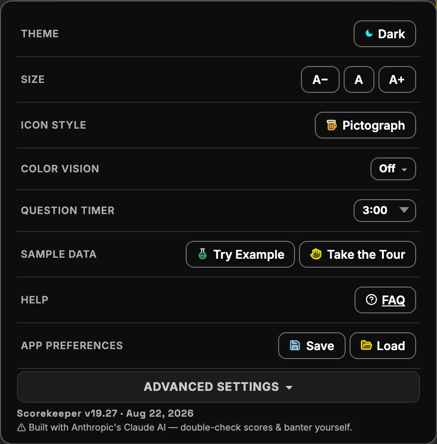
Does the app save my progress automatically?▼
Yes — every change autosaves to the browser as you go. See Autosave & Resume below for what happens if you close the tab or reload mid-game.
Can I collapse sections I'm not using right now?▼
Yes — every section's header (Event Details, Teams, each Round, Final Results, Craft Prize Drawing, Export & Data) is clickable and collapses/expands via the ▼ arrow on its right edge. Handy for tidying the screen down to just the round you're actively scoring, or for getting Event Details and Teams out of the way once the game's underway. A few sections (the rounds, and Export & Data) start collapsed by default; the rest start open.
Interactive Tutorial
A guided, click-along walkthrough of a full game — the fastest way to learn the app by actually using it instead of reading about it.
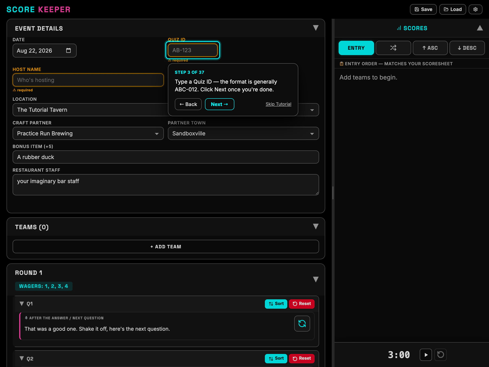
What is the tutorial, and how do I start it?▼
It's a spotlight-style tour: the rest of the screen dims, one real control at a time is highlighted with a ring around it, and a callout box explains what it does and what to do next. Start it from Settings ( top right) → Take the Tour, right next to Try Example. First-time visitors with no game in progress also get offered it automatically — a small " New here? Take the 2-minute tour." card appears where the resume banner would normally be, with Take the Tour and Skip buttons. That auto-offer only ever shows once; after that, taking the tour is always available from Settings whenever you want it.
What actually happens during the tour — is it real, or just a slideshow?▼
It's real. The tour runs an actual throwaway 5-team practice game through the exact same scoring, wager, and export functions a live game uses — nothing is faked or staged as a picture. For the parts worth learning by doing, it hands control to you: typing the Quiz ID and Host Name, flipping the Light/Dark theme, adding and naming your first team, entering their Score Guess, checking a Bonus box, cycling one question through correct → incorrect → cleared, scoring a Bonus question, placing a Halftime Wager, trying the Sort button, and opening (then closing) a team's Team Report. For the repetitive rest — the other four teams, the remaining rounds, everyone else's wagers — the tour fills it in live for you so the tour takes a couple of minutes instead of the length of a real game. It even deliberately engineers a Beer Round and a genuine Final Results tie along the way, so both of those moments are guaranteed to show up instead of being left to chance. A Step X of Y counter and Back / Next / Skip Tutorial controls sit in the callout the whole time, and it walks through essentially the entire app — Event Details, Theme in Settings, Teams, collapsing sections, Round scoring, the Halftime Wager, Round 3 & 4, the Final Wager, Final Results, the Craft Prize Drawing, and Exporting.
Will starting the tour wipe out my real game in progress?▼
Starting it swaps in the throwaway practice game and asks you to confirm first, same as Try Example does. What happens to your real game afterward depends on how the tour ends: Skip Tutorial (available on every step but the last) restores your real game exactly as it was, untouched. Reaching the last step and finishing normally instead keeps the practice game as your live session — so if you have real, unsaved work in progress, export or save it (see Manual Save & Load) before starting the tour.
Event Details
The fields at the top of the app — who, where, and what the bonus is for tonight.
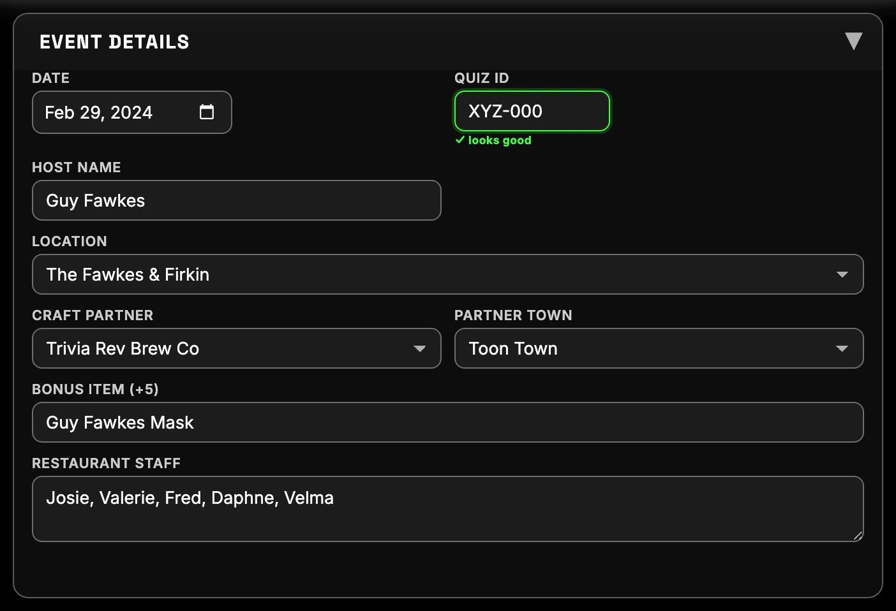
What goes in each Event Details field?▼
- Date — the date of the event.
- Quiz ID — required before scoring can start, but its format is free-entry; typing something that doesn't look like the usual pattern (a few letters, a few numbers) shows an orange hint about proper formatting. A properly formatted ID shows a green checkmark instead.
- Host Name — who's hosting the game. Also required before scoring can start; is shown on both the PDF and XLSX exports.
- Location — the venue. Also required before scoring can start; type your own or pick from the suggestions that pop up as you type.
- Craft Partner / Partner Town — the brewery providing the Craft Prize, and the town it's in. Both go into the winner announcement banter at the end and the eligible-list exports for a separate drumroll-chooser app.
- Bonus Item (+5) — the "bring this item" bonus for the night. If a team brings the right item, a box gets checked on their Team Entry row for +5 points.
- Restaurant Staff — names to shout out; also feeds the "Thank the Staff" prompt that appears at halftime.
Is there a limit on how much I can type into a field?▼
Yes — every field you type free text into has a character limit. Reach one and the field outlines in orange with a Limit reached — N characters max note underneath, so a field that has stopped accepting letters is telling you why rather than looking like a dropped keypress.
- Quiz ID — 24 characters.
- Host Name — 40 characters.
- Location — 60 characters.
- Craft Partner — 50 characters.
- Partner Town — 40 characters.
- Bonus Item — 60 characters.
- Restaurant Staff — 200 characters.
- Team name — 40 characters (over in Teams).
- Winner announcement script — 600 characters (in Craft Prize Drawing).
The sizes follow what each field is for rather than a round number — a Quiz ID is a code, a team name has to fit the scoresheet's team column, the staff list is a handful of first names, and the script is a paragraph read aloud.
The same limits apply to a game arriving from a saved .json file, including one saved before these limits existed — anything longer is trimmed to the limit as it loads. That's deliberate: the PDF and the scoresheet shrink text to fit a fixed box, so an overlong value never spilled over the edge, it shrank until nobody could read it.
Why are some Event Details fields greyed out?▼
Once scoring starts, Event Details locks so it can't drift mid-game — a wager gets scored, a team's added, whatever the trigger, the section shows a note with an Unlock to fix it link right there in case of a typo. That link does the same thing as the Edit Locked Fields toggle in Advanced Settings — see Tips & Tricks.
Teams
Add, rename, and remove teams whenever you need to — even mid-game.
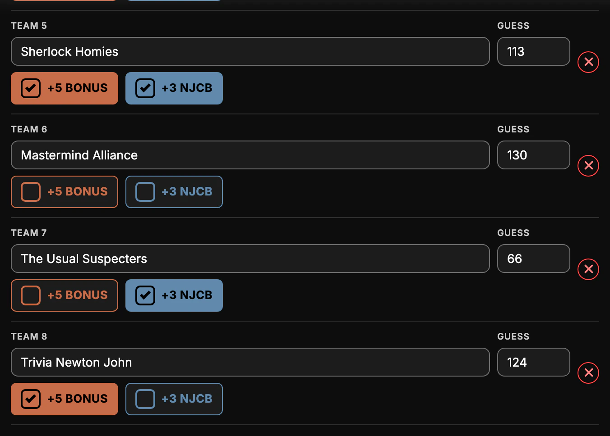
Can I add or rename teams after the game has already started?▼
Yes. Unlike Event Details, team names, guesses, and the + Add Team button all stay open the entire game — handy for a team that walks in late or a name you misheard at check-in. The team cap is 100 teams; past that, the Add Team button is replaced with a note saying the cap's been hit.
What do the "+5 Bonus" and "+3 NJCB" checkboxes do?▼
+5 Bonus is checked when a team brought that night's Bonus Item (whatever you entered in Event Details). +3 NJCB is checked when a team shows their NJCB membership card. Both add straight to the team's total, and both get stripped back out again before Score Guess is compared to the final score — see Final Results & Ties for why that matters.
What's the Score Guess field, and what if a team never gives one?▼
It's each team's pregame guess at their own final score (1–146), used purely as a tiebreaker — the team whose guess lands closest to their actual score wins a tie. A team with no guess entered shows an orange ⚠ missing warning next to their field, and the Teams section header tallies how many are still missing, so the warning doesn't disappear once scoring starts. A missing guess never blocks scoring — it just shows as "—" instead of a number in Final Results.
I removed a team by mistake — what did that actually delete?▼
The confirmation prompt explains what's being wiped: the team itself, plus every round, bonus, and wager score already entered for them. There's no separate undo — if you meant to keep the data, cancel the prompt instead. Once confirmed, every other team's data re-indexes cleanly (no gaps, no shifted scores).
Scoring Rounds
Four rounds, five questions each, with point bank-based scoring, multi-part bonus questions, and point wagering.
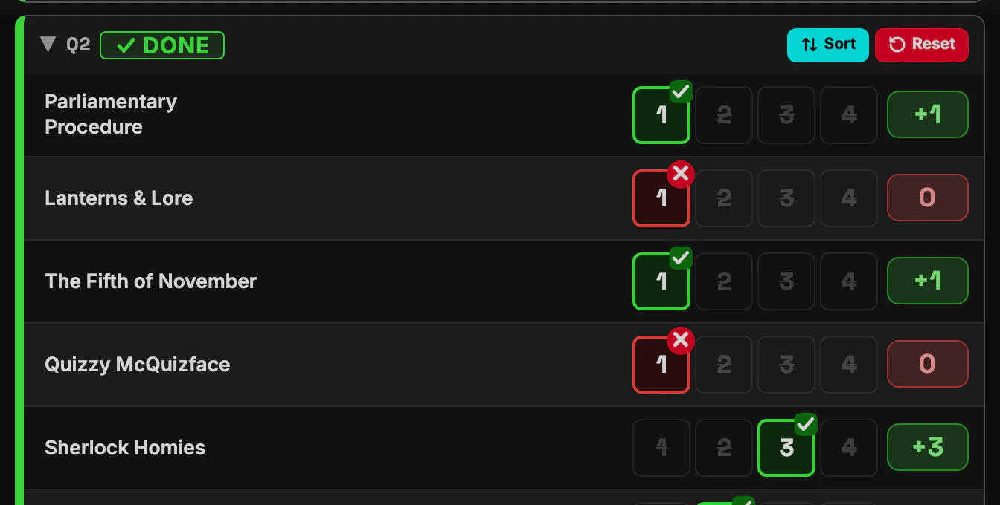
How does marking a question correct/incorrect actually work?▼
Each question has 4 wager buttons. Click a team's chosen wager once and it turns green (correct); click that same wager again and it turns red (incorrect); click it a third time and the answer clears entirely. A team can only use each wager value once per round — trying to reuse one that's already assigned to a different question is blocked.
What's the Q5 "Bonus" question in Rounds 1 and 3?▼
A multi-part question with zero to four correct answers worth 5 points each.
What's a "Beer Round"?▼
The app watches every question as it's scored. If every team gets a question right, a gold " Beer Round!" banner lights up across that question automatically. Purely a fun celebratory flourish; it doesn't change scoring.
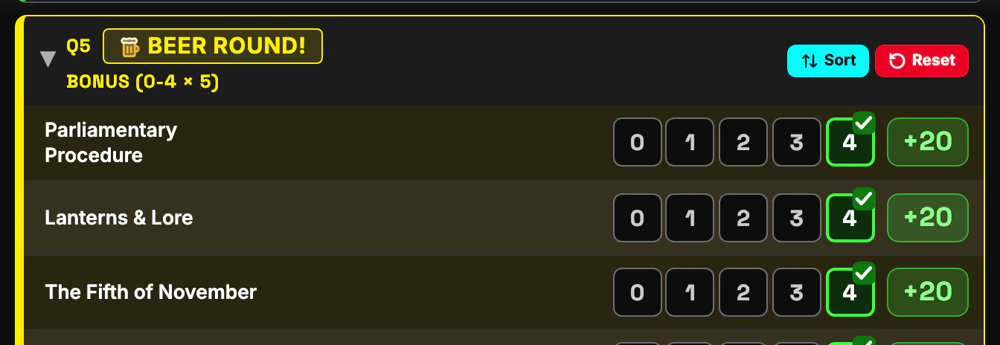
Question Timer
A countdown clock for pacing each question. On bigger screens it's at the bottom of the scoring sidebar. On smaller screens it's down in the bottom dock.
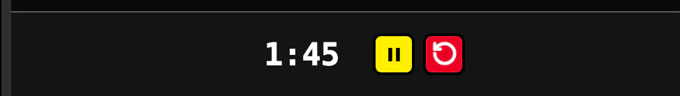
How does the Question Timer work?▼
One icon-only button does all three jobs, changing shape as the timer's state changes: a play triangle begins the countdown from its base duration and, once paused, resumes it; the same button becomes a pause icon while running. A separate Reset button stops the clock and returns it to the base duration — it's disabled whenever the timer is already idle, so there's nothing to reset. The base duration itself comes from Settings → Question Timer, a dropdown from 1:00 to 15:00 in 30-second steps (default 3:00).
I changed the duration in Settings while a question was already timing — why didn't it change?▼
That's expected — the Settings dropdown only sets the duration the timer uses the next time it's started fresh from idle. A countdown that's already running or paused keeps counting down on whatever duration it started with, so changing the setting mid-question can't retroactively shorten or lengthen a clock that's already live.
What happens when the timer hits 0:00?▼
It doesn't just stop — it keeps counting, now upward past zero with a minus sign in front, so it's obvious at a glance that time's run out without the display doing anything jarring at the exact moment it happens. The background also shifts color as a warning on the way there: one shade once under a minute left, a more urgent one under 30 seconds, and a distinct look once it's gone negative.
Can I hide the timer, or add quick +/-30s buttons?▼
Yes, both are Advanced Settings toggles — see Timer Widget and Timer Stepper Buttons in Tips & Tricks for the full rundown of what each one controls.
Halftime & Final Wager
One big wager after Round 2, one after Round 4.
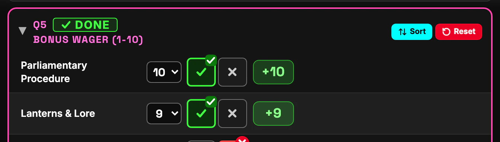
How do the wagers affect a team's score?▼
Each team wagers their own amount; they must bet at least one point. For Round 2 they can bet up to 10 points and for Round 4 they can bet 20. If marked correct, that amount is added to their score; if marked incorrect, it's subtracted. Leaving a team's wager blank gives them a zero.
Scores & Standings
The Scores panel tracks every team's running total the whole game.
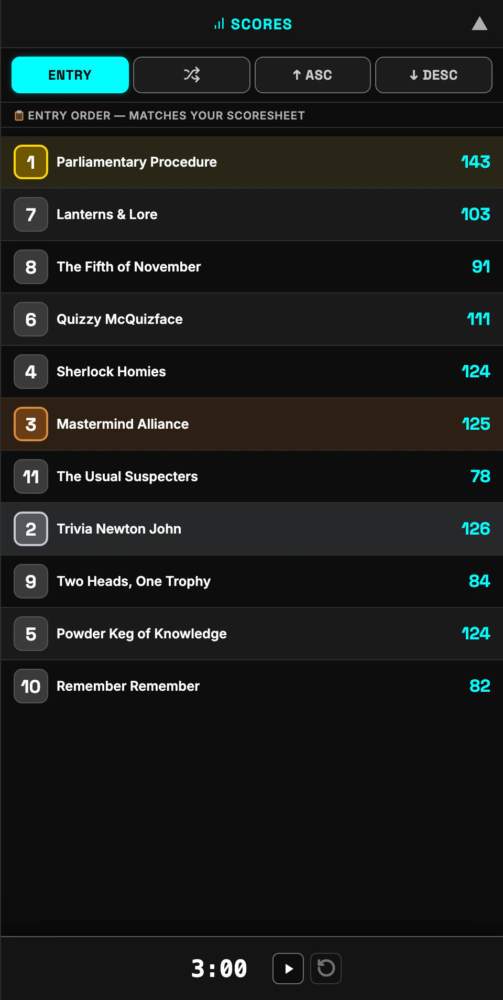
What are the Entry / RAND / ↑ Asc / ↓ Desc buttons in the Scores panel?▼
Four ways to order the live scoreboard: Entry is the order teams were added at the start of the event, RAND shuffles them into a random order (handy for reading results aloud without always starting with the same team), ↑ Asc (Ascending) and ↓ Desc (Descending) sort by current score.
What are "Scores — Before Halftime Wager" and "Before Final Wager"?▼
Team Standings that show their score at that point in the game. This way, you can read out everyone's scores before going into the question and teams can decide how much to bet.
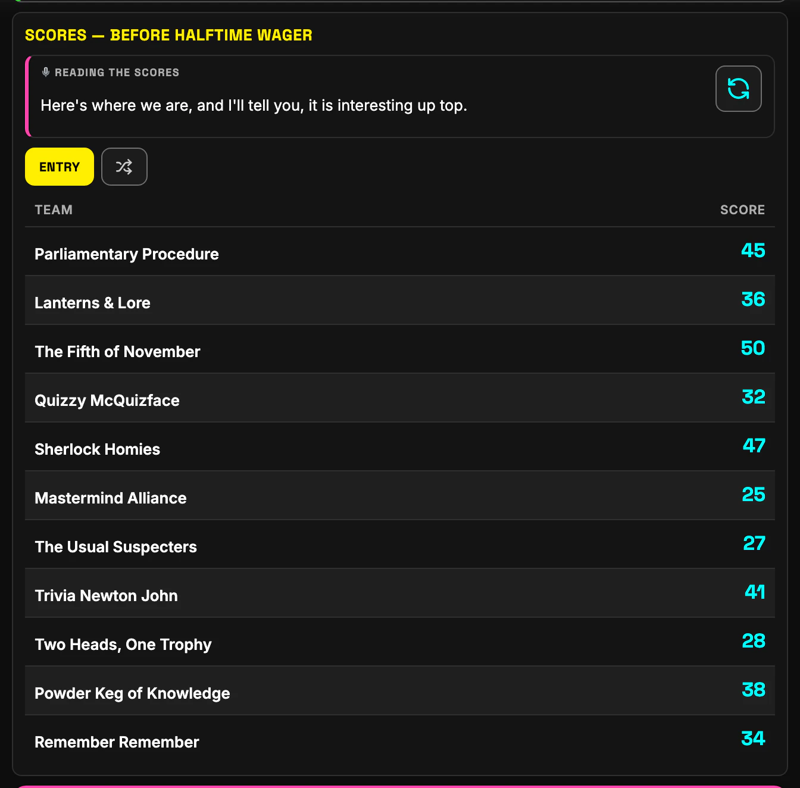
On my phone, I don't see the full Scores sidebar — what's the bar at the bottom?▼
That's the mobile bottom dock — a peek strip pinned to the bottom of the screen showing a quick glance at scores without leaving the round you're scoring. Drag it (or tap it) up to expand the full Scores sidebar over the screen, and drag the grab handle back down — or tap outside it — to collapse it again. It only appears on narrow/phone-width screens; on a tablet or desktop the Scores sidebar just sits open on screen the whole time instead.
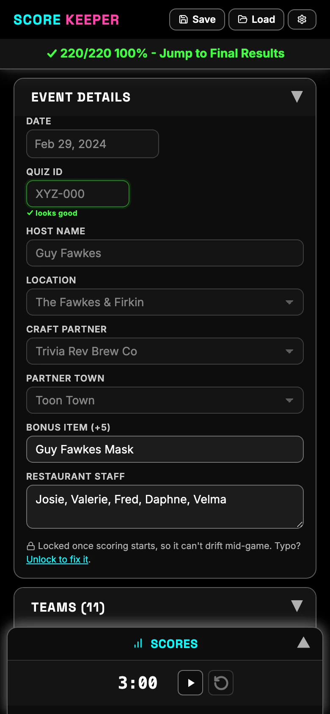
Final Results & Ties
End of Game Scoring — including how ties are handled.
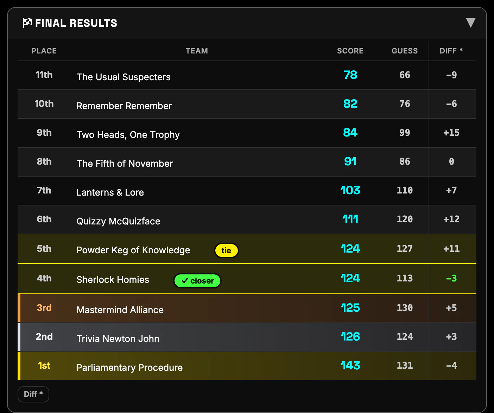
Why is a team's "Diff" not just Score minus Guess?▼
Because +5 Bonus and +3 NJCB are
stripped out of a team's score before it's compared to their guess
— teams generally guess their trivia score, not their
trivia score plus whatever extras they happened to bring. So
Diff = |(Score − Bonuses) − Guess|, and the Final
Results table has a footnote spelling that out.
Two teams have the same score — how does the app decide who ranks higher?▼
First tiebreak is Score Guess closeness — whichever team's guess landed nearer their actual (bonus-adjusted) score ranks higher and is marked " closer". If their guesses are also equally close (including two teams that both left the guess blank), that's a genuine, unbreakable tie, and both teams share the exact same place — the next distinct team after them still gets the very next place number, nothing gets skipped. So three teams tied for 5th, with one guessing closer, would read 5th / 6th / 6th rather than 5th / 5th / 5th.
How do I double-check how one team's score was actually built?▼
Tap/Click on the team's name to open their Team Report — a full round-by-round breakdown, with the same Guess/Diff math this table uses explained tile by tile.
Team Report
A full round-by-round breakdown of exactly how one team's score came together.
How do I open a team's Team Report?▼
Tap or click their name — this works almost everywhere a team name appears: a round's question rows, standings, Final Results, not just one dedicated screen. It's the fastest way to answer "wait, how did they get that score?" in the middle of a live game. Press Esc to close it instead of hunting for the ✕ — the same shortcut closes the Scores sidebar on mobile.
I tapped a name in the Scores sidebar and nothing like this opened▼
That's the one exception — a name in the Scores sidebar itself doesn't open the Team Report. Tapping it there sets, or clears, that team as the Craft Beer Prize winner instead. See Craft Prize Drawing.
What does each round in the breakdown show?▼
That question's wager, whether it was marked correct or incorrect, and the team's running score right after it — round by round, plus the bonus question tally and both wagers. If a wager's wrong, this isn't where you fix it: close the report and tap the wager button in the round itself instead.
What do the four tiles above the breakdown mean — Diff Adj, Adj. Score, Diff, Score Guess?▼
They walk through how a team's Grand Total gets compared to their own Score Guess, in order, left to right:
- Diff Adj (Difference Adjustment) — the bonus points coming back off: Bonus Item (+5) and NJCB (+3), if the team had either.
- Adj. Score (Adjusted Score) — the Grand Total with those bonuses stripped back out.
- Diff — Adj. Score measured against Score Guess, what the team guessed their own score would be at the start of the night. A plus (+) means they guessed high, a minus (−) means they guessed low, and 0 means they called it exactly.
The bonuses come off before that comparison so every team is judged on the same bonus-free footing — a team that guessed accurately but also happened to win a bonus item shouldn't come out looking like a worse guesser than one who didn't.
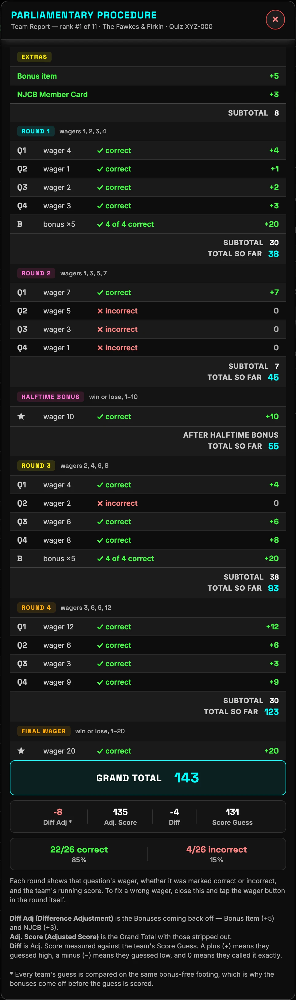
Craft Prize Drawing
A random draw for the night's craft beer gift card, from a pool that leaves the top finishers out (since they already won gift cards).
Until you open it, the section is a single square Choose Craft Prize Winner button:
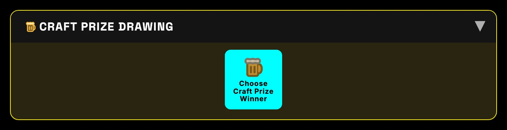
Open it and the Exclude Top / Drumroll-seconds steppers and the Start Drumroll button appear:
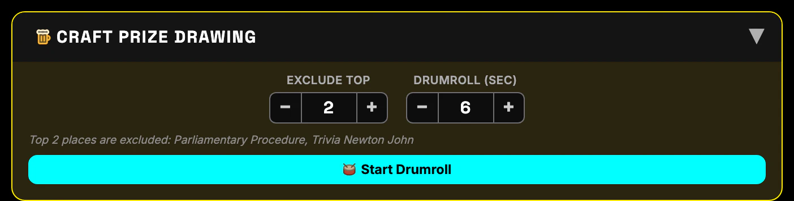
How does the drawing decide which teams are eligible?▼
The Exclude Top stepper sets how many of the top-placed teams sit out the drawing (top finishers already have won gift cards; the craft prize is for everyone else). It scales with your roster.
What happens when I click " Start Drumroll"?▼
A drumroll plays for the configured number of seconds, then a winner is drawn from the eligible pool and announced with a line naming the craft partner and town from Event Details. A Clear button next to the result lets you reset and redraw a winner.
That's the random way. There's also a manual one: tap a team's name in the Scores sidebar (the running leaderboard, not this section) and that team becomes the winner directly, no drumroll, no pool — a CB Prize tag appears next to their name to show it stuck. Tap the same name again to clear it. This is what you want whenever the winner isn't coming from this app's own random draw — most often because a bar or restaurant staff member is the one choosing, from behind the bar, a jar of tickets, or however that venue normally runs it. Tap their team in once the staff announces it, and everything downstream — the winner banner, the exports — reflects the real result.
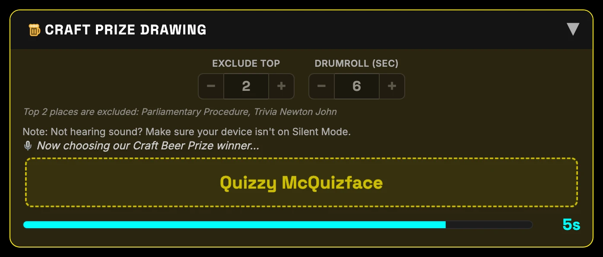
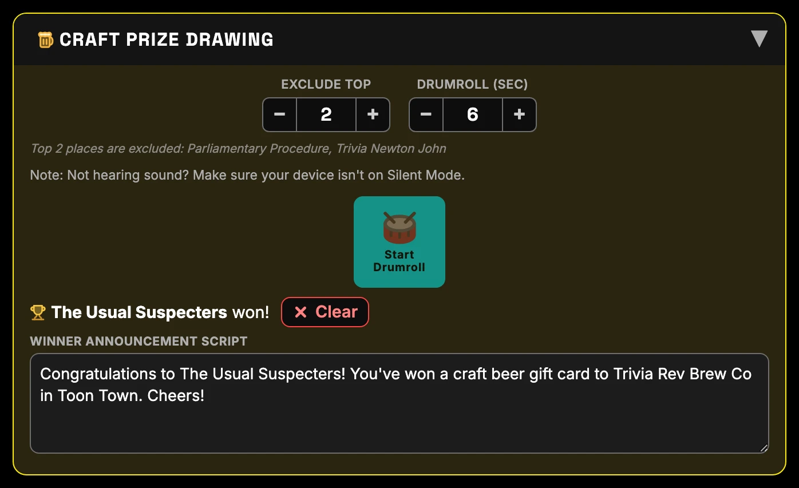
Exporting Your Game
Getting the night's results out of the browser.
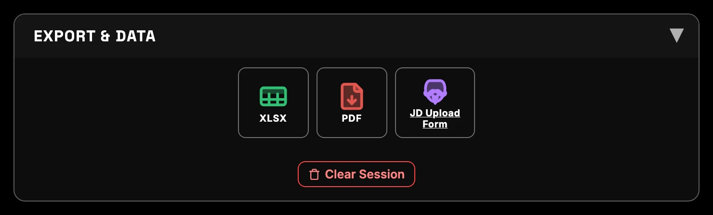
What's the difference between XLSX, PDF, and the JD Upload Form link?▼
- XLSX — fills in the official spreadsheet template (Location, Date, Quiz ID, Host, every team's wagers and totals) and downloads it.
- PDF — a printable, easily readable scoresheet, with Location/Date/Quiz ID/Host header and full game results.
- JD Upload Form — opens JD's results-submission form in a new tab; the scorekeeper app stays open and untouched.
What does the XLSX export look like?▼
The official spreadsheet template, opened in a spreadsheet app — Location/Date/Quiz ID/Host filled in, and every team's wagers and totals filled into their rows.
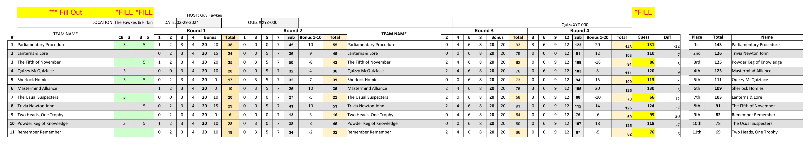
What does the PDF export actually look like?▼
A printable scoresheet with Location/Date/Quiz ID/Host at the top and the full game results.
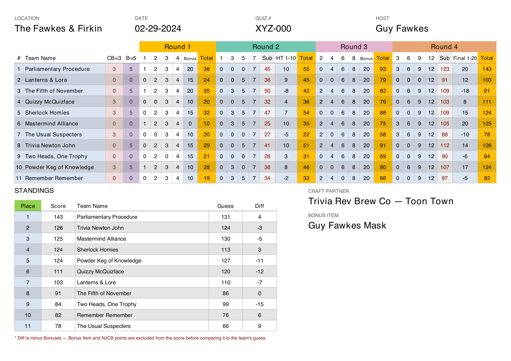
What is the JD Upload Form link?▼
A link straight to JD's results-submission form, opened in a new tab.
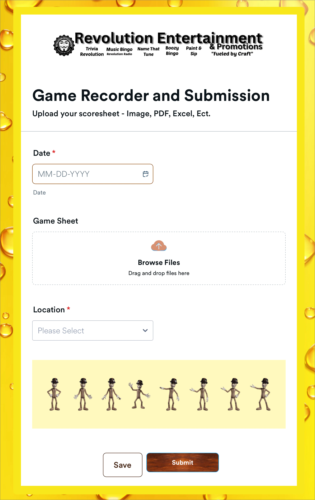
After exporting, the app asks to "Clear session?" — what does that mean?▼
It's just a prompt, not automatic — choosing Yes wipes the current game so you're ready for the next one; No leaves everything exactly as it was, in case you need to export again or double-check something first.
Can I save/load the whole game, not just export it?▼
Yes — that's a separate feature from these exports, covered in Manual Save & Load below.
Manual Save & Load
A manual backup of the whole game, separate from autosave and separate from the PDF/XLSX exports.
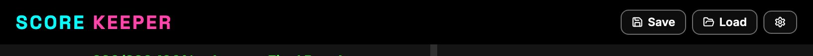
What do Save and Load (top toolbar) actually save?▼
Save downloads the entire game as a JSON file
— every Event Details field, every team, every round, bonus, and
wager score, exactly as the app itself would need to reload it.
The filename uses the venue name and date, e.g.
Man Skirt Brewery - 04-13-2026-save.json.
Load reads that same kind of file back in and
picks up exactly where it left off — including a game saved from a
different browser or device entirely.
How is this different from the PDF/XLSX exports?▼
The PDF and XLSX exports (see Exporting) are one-way, human-readable scoresheets — great for handing off or printing, but not something the app can read back in. Save/Load's JSON file is the opposite: not meant for a human to read, but a complete, exact round-trip of the game state. Use exports to hand off results to someone else; use Save/Load to back up or load the game itself on a different device.
What happens if I click Load with a game already in progress?▼
A confirmation prompt appears first, and it says plainly what's about to happen: loading a file replaces every team, score, and Event Details field currently entered, and it can't be undone. Cancel it and nothing changes. If the chosen file turns out not to be valid JSON (or isn't a real save), the app tells you so in an alert instead of silently failing or corrupting the current session.
What's the difference between this and "App Preferences" Save/Load in Settings?▼
Separate file, separate purpose. The toolbar's Save/Load (above) carries game data — teams and scores. Settings' own App Preferences Save/Load carries only your display settings (theme, size, timer defaults, and the rest of Settings) as its own JSON file, with no team or score data in it at all. That split means you can carry your preferred setup to a new device without dragging an old game along, or hand off a game file without also handing off your personal display preferences. Same pattern either way: a confirmation before Load, and a clear alert if the file isn't valid.
Autosave & Resume
The app is built around not losing a night's scoring to a closed tab.
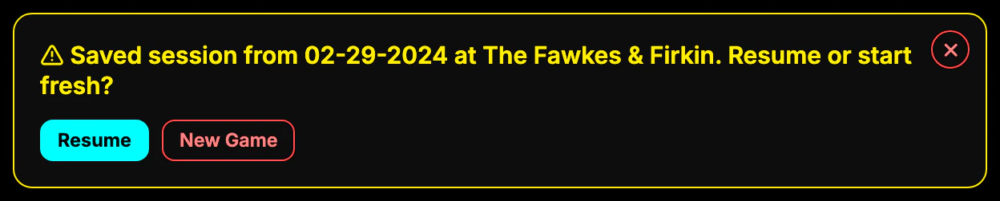
What happens if I accidentally close the tab or reload mid-game?▼
Every change autosaves to the browser as it happens. Reopening the app shows a " Saved session found" banner with two choices: Resume restores everything exactly as it was — Event Details, every team, every score, Craft Prize state — and New Game discards it and starts clean.
Does the app keep working if the venue's wifi drops?▼
Yes — once it's loaded successfully one time, it keeps working with no signal at all. It registers itself as an installable offline app in the background, so a dead spot in the room mid-game won't interrupt scoring; you'll just need a connection again once you're ready to actually export or upload results. See Installing as an App for actually putting it on your home screen, which makes this more reliable still — an installed app is less likely to get reloaded or closed by the OS than a browser tab left open in the background.
The app is warning me that autosave is off — why?▼
That only happens if the app was opened directly as a local file
(a file:// address) instead of served from a real
web address — some browsers, notably Chrome, block persistent
storage entirely under those conditions. The game still works
for that session, but autosave, Resume, and saved Settings are
all disabled until it's reopened properly — as
the hosted app, or served locally (python3 -m http.server), or
opened in Firefox, which doesn't have this restriction.
Installing as an App
Optional, but worth it for game night: add Scorekeeper to your phone's home screen and it opens full-screen, with its own icon, same as a native app — no address bar, no tab to lose.
iPhone or iPad (Safari)▼
Open the app in Safari, tap the Share icon, scroll down and tap Add to Home Screen. Apple's own written walkthrough covers this exactly, with current screenshots: Turn a website into an app in Safari on iPhone (the iPad version is the same idea). Must be Safari — other iOS browsers can bookmark a page but can't install it as a standalone app the same way.
Android (Chrome)▼
Open the app in Chrome, tap the ⋮ menu, then Add to Home screen (sometimes offered as Install directly in the address bar). Google's own written guide: Use web apps on Android — Chrome Help.
Is there a video walkthrough?▼
Not from Apple or Google directly, as far as this page can find — both companies cover it in writing only (linked above), not in a first-party video. If you'd rather watch than read, here are two third-party tutorials — not official, not affiliated with this app, just plainly titled and matching the exact steps above:
I installed it a while ago — how do I get the latest version?▼
A web app added to the home screen can't update itself the way a native App Store app does — there's no background download, and the icon and shortcut iOS/Android saved at install time don't refresh on their own, even if the site behind them has a newer version. Reopening it (or even force-quitting and reopening it) doesn't guarantee a fresh copy.
The reliable fix is the same either way: remove the installed app, then add it again exactly like the first time.
iPhone/iPad: Press and hold the app's icon on the home screen until a menu appears, tap Remove App, then Delete App (this removes the shortcut only — it doesn't touch anything saved inside the app itself, like Save/Load files you've downloaded). Then open the site in Safari and Add to Home Screen again, same as installing it the first time.
Android: Press and hold the app's icon, tap Uninstall (wording varies slightly by phone), then open the site in Chrome and Add to Home screen again.
Settings
The gear icon, top right.
What's in the main Settings list?▼
- Theme — Dark or Light. See Light Mode & Dark Mode below.
- Size — A−/A/A+ text size, app-wide.
- Icon Style — Pictograph or Emoji. Every drawn icon in the app (Sort, Reset, Beer Round, the correct/incorrect marks, and the rest) can swap back to the platform emoji it originally replaced, if that's more your speed. This page has the same toggle, in its own Settings panel, top right — the icons throughout this FAQ swap right along with it.
- Question Timer — the default countdown length for the on-screen question timer, from 1:00 to 15:00.
- Sample Data — Try Example loads a finished sample game to browse; Take the Tour walks you through playing one. See Getting Started and Interactive Tutorial.
- Help — the FAQ link that opens this page.
- App Preferences — Save / Load for just these display settings, separate from the game data itself. See Tips & Tricks for how this compares to the toolbar's own Save/Load.
- Advanced Settings — collapsed by default, below the main list. Row Density, Row Zebra Stripes, timer behavior, drumroll controls, and the rest of the power-user toggles. All covered in Tips & Tricks.
What's the difference between the main Settings and "Advanced Settings"?▼
Main Settings covers display preferences most hosts touch every game. Advanced Settings (collapsed by default, below the main list) holds the rarer, power-user controls — unlocking Event Details mid-game, timer widget behavior, drumroll controls, and more. All covered in Tips & Tricks.
Light Mode & Dark Mode
Settings → Theme toggles between the two themes.
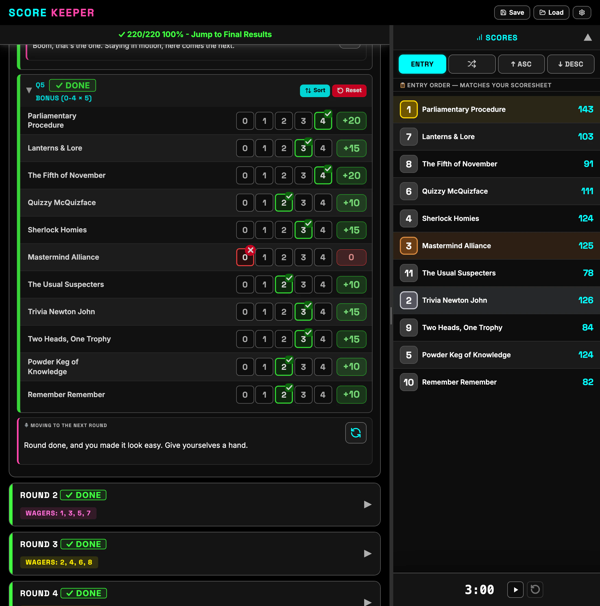
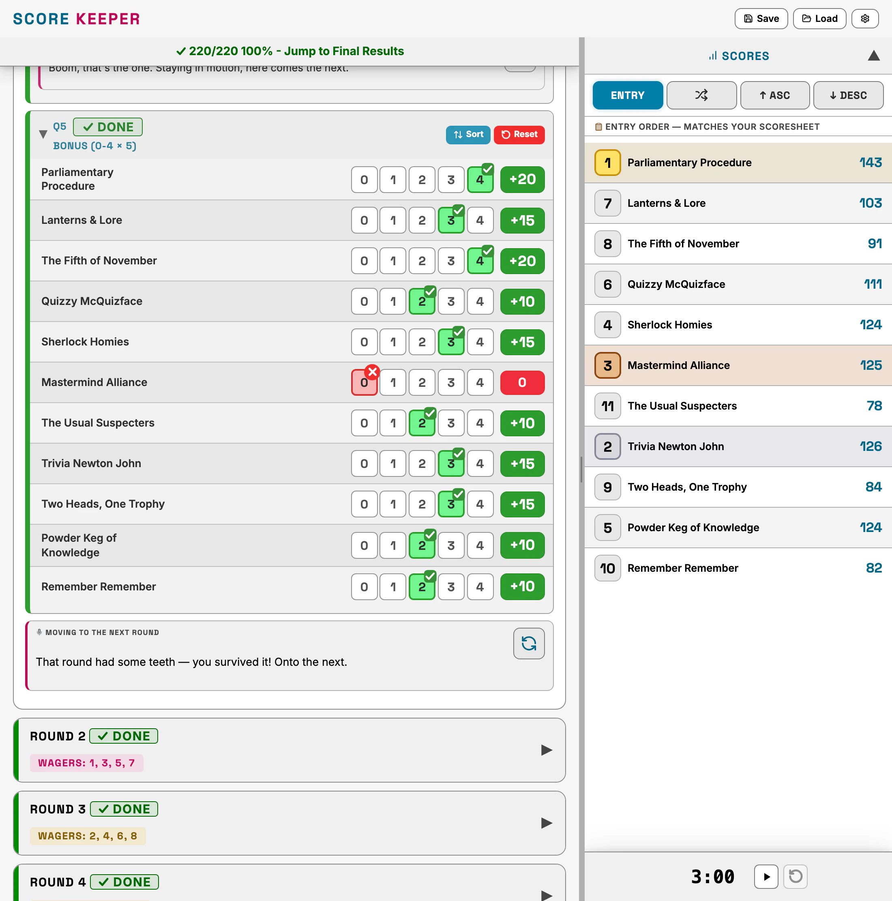
How do I switch between them?▼
Open Settings ( top right) and click the Theme button — it reads Dark or Light depending on which one is active, and clicking it flips straight to the other. The choice is saved and applied when the app opens.
Tips & Tricks
The stuff that isn't obvious from just looking at the screen — including everything tucked into Advanced Settings.
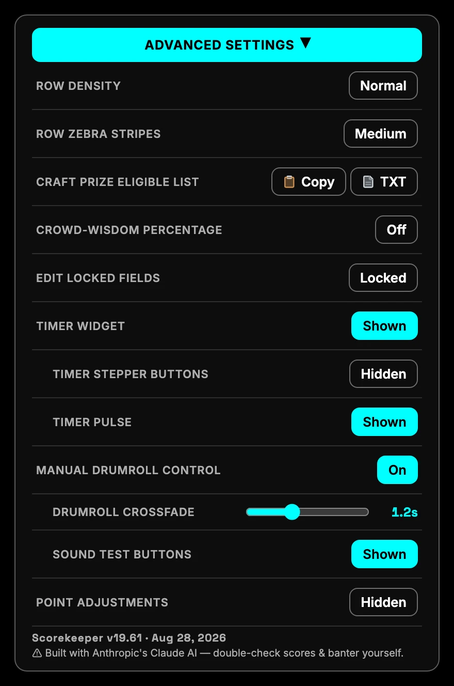
Use the Sort button to find who still hasn't answered▼
Every question has its own Sort and Reset buttons. Sort is a one-time move that bumps currently-unanswered teams to the top of that question — invaluable in a big room where you're waiting on the last few answers. Click it again to re-sort as more come in, and Reset restores the original entry order whenever you're done.
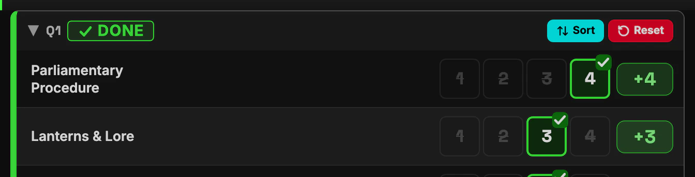
App Preferences — backing up just your settings▼
Saves or loads only your display preferences (theme, size, timer defaults, and the rest of Settings) as a separate file from the game data itself — handy for carrying your preferred setup to a different device or browser without touching any game in progress there. It's a main Settings row, not an Advanced one — see Manual Save & Load for how this compares to the toolbar's own Save / Load, which carries the game itself.
Advanced Settings
The rarer, power-user controls tucked into Settings → Advanced Settings (collapsed by default). Off unless noted otherwise.
Row Density▼
Normal, Relaxed, or Compact spacing between rows — team rows, question rows, and the rest — for fitting more on screen or giving each row more breathing room, whichever the venue's screen and lighting call for. The square wager buttons scale with it too: bigger on Relaxed (growing to fill the taller rows), smaller on Compact, always square. Same Round 1 question, same example teams, same vertical space in each shot:
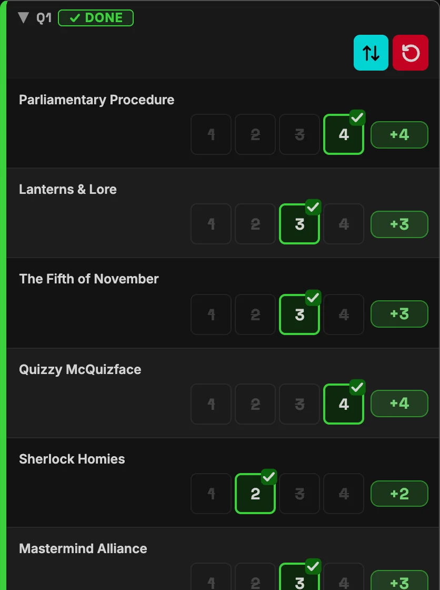

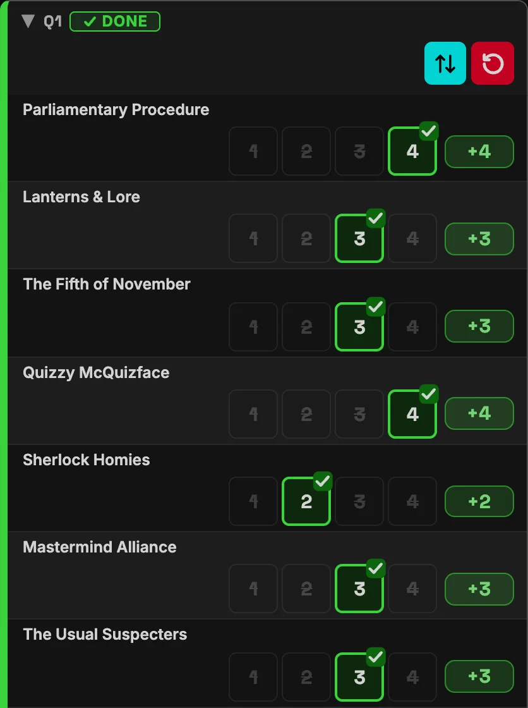
Row Zebra Stripes▼
Subtle, Medium, or High — how visible the alternating-row striping is, for tracking a specific row across a wide table at a glance. Same question and teams in each shot, striping only:
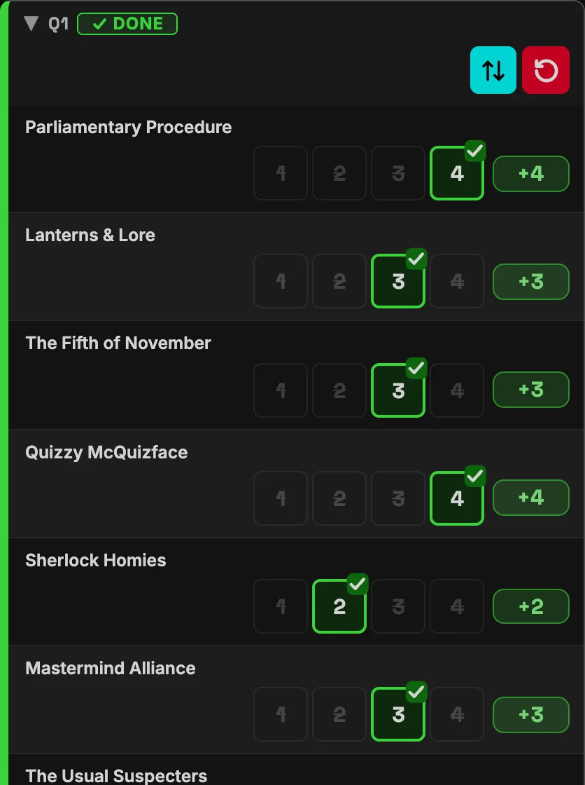
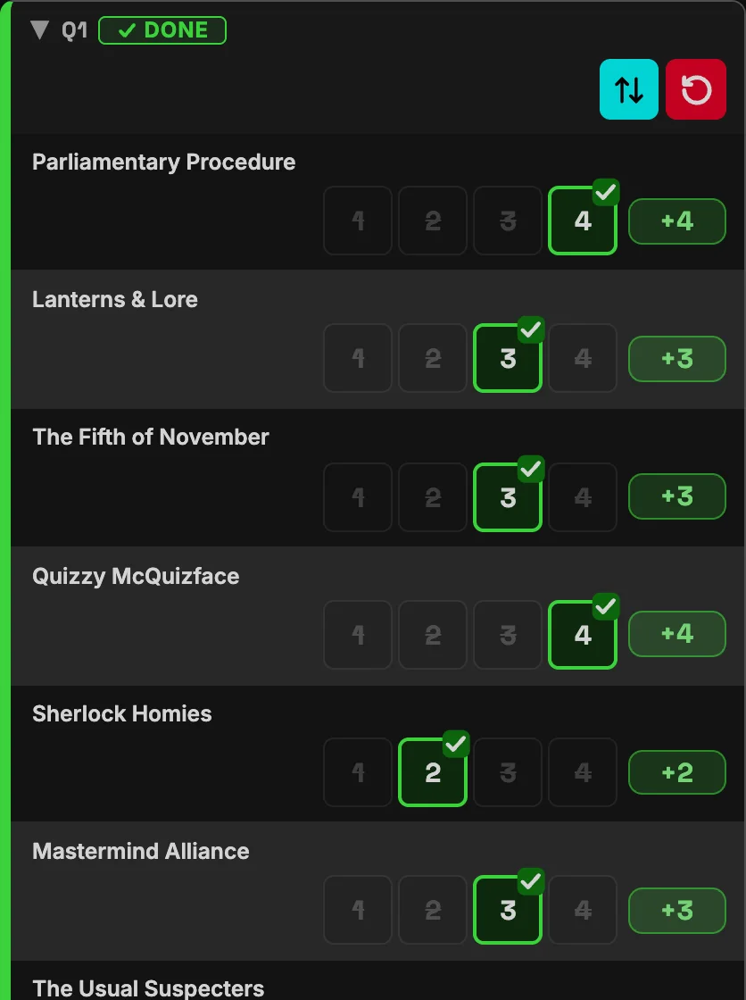
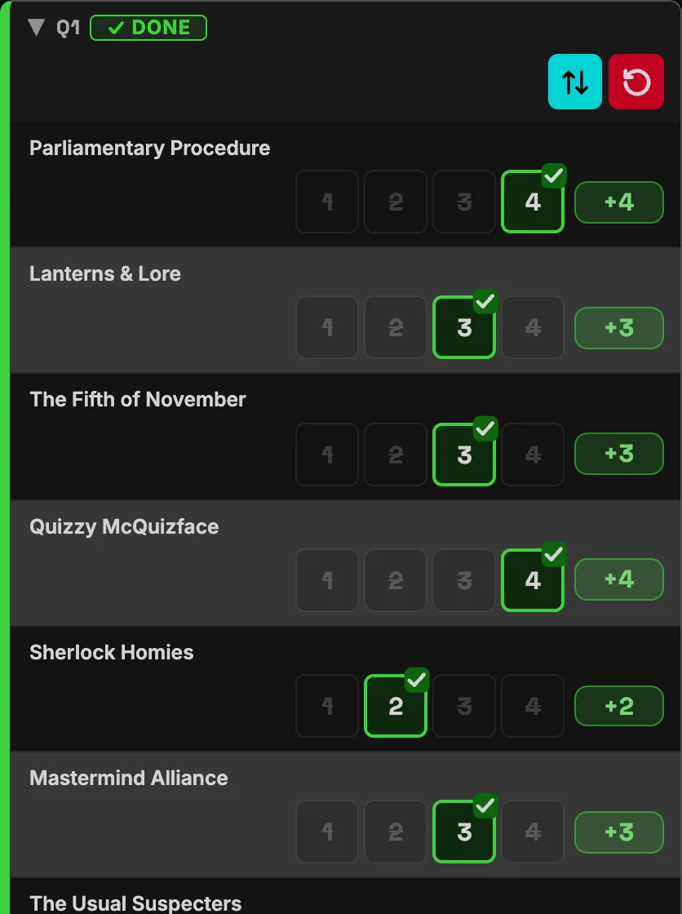
Craft Prize Eligible List — handing the draw to another app▼
Copy and TXT export the craft partner, its town, and the eligible team names (Exclude Top already applied) as plain text — one name per line — so the actual drawing can be handed off to a separate drumroll or name-picker app if you'd rather run it there. The same list and buttons also appear directly inside the Craft Prize Drawing section once it's open.
Crowd-Wisdom Percentage▼
Adds a live correct/incorrect percentage next to each question's Sort/Reset buttons — both counts together, e.g. " 4/11 (36%)" and " 7/11 (64%)" — so you can see at a glance how a question is trending without scrolling through every team's row.
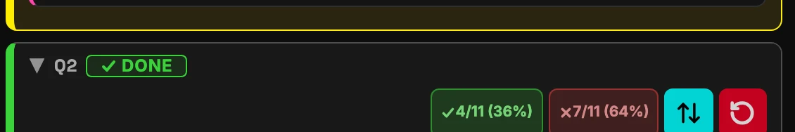
Edit Locked Fields — fixing an Event Details typo mid-game▼
Event Details locks once scoring starts (see Event Details). This toggle reopens Date, Quiz ID, Location, Craft Partner, and Partner Town for editing without losing anything else. The same "Unlock to fix it" link appears inline in Event Details itself once it's locked, so you don't have to remember this is where it lives.
Timer Widget▼
Shows or hides the on-screen question countdown entirely. See Question Timer above for what it does while it's shown.
Timer Stepper Buttons▼
Adds −30/+30 nudge buttons flanking the countdown — −30 sits before it, +30 after — for adjusting time on the fly. While idle they clamp to the same 1–15 minute range as the Settings duration dropdown; while running or paused they're unclamped, so tapping +30 repeatedly just keeps adding time. This row only appears once Timer Widget above it is on — nothing to add stepper buttons to otherwise.
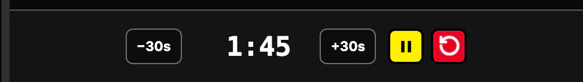
Timer Pulse▼
Flashes the timer's background when time is running low, on top of the color shift that already happens either way — see Question Timer above. Same as Timer Stepper Buttons, this row is hidden until Timer Widget is on.
Manual Drumroll Control▼
Puts the end of the draw in your hands — useful when a staff member is revealing the winner from a stack of papers rather than the app's own random draw timing. Stop Drumroll cuts the roll short and leaves the draw paused, then that same button becomes Play Horn, which commits the winner and fires the horn exactly when you want it. It's one button in two states, not two side by side — the screenshot shows the paused half, since that's the one you only ever see with this setting on.
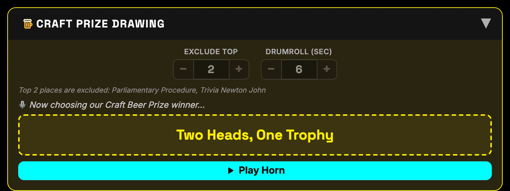
Drumroll Crossfade▼
A slider (0.2s–3.0s) controlling how gradually the roll winds down when you press Stop Drumroll. Only shown once Manual Drumroll Control above it is on, since there's no Stop Drumroll to fade without it.
Sound Test Buttons▼
Adds square Roll/Fade out/Crash/Horn buttons inside the Craft Prize Drawing section for previewing each of the drumroll's audio clips on their own, without starting a real drawing. Same as Drumroll Crossfade, only shown once Manual Drumroll Control above it is on.
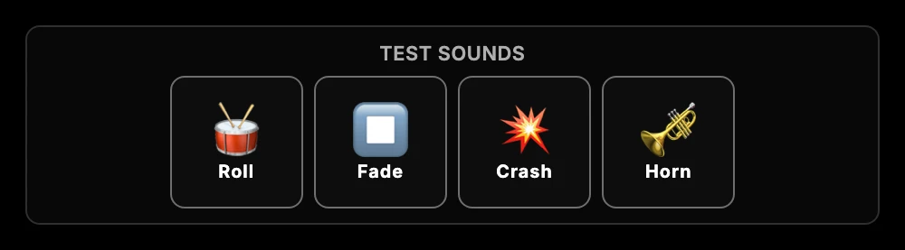
Point Adjustments▼
Adds a manual ± point adjustment control to each team row, for a one-off nudge to a team's score that doesn't fit anywhere else — a scoring dispute resolved after the fact, a paper-scoresheet correction, that kind of thing. It stacks with everything else the team already earned rather than replacing it.